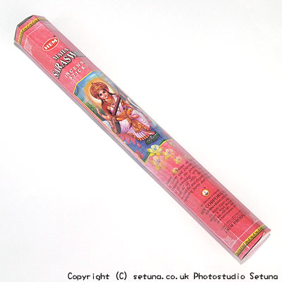

そのまま置いておくと部屋が松のような清涼感のあるグリーン系の香りで満たされます。
近くで嗅ぐと全く違ってロータスと柑橘系が一緒になった匂いがします。
でも何故これが置いとくと松の様になるのかが不思議です。
火を点けると中心は乳香っぽく、周りをモモやサクラの様な香りが取り囲む様に華やかな香り始めます。
恐らくロータスのなのでしょうが、ロータスだけに比べると全く香りが異なり、甘美で優雅に香ります。
燃え進むにつれてヘナやパチュリ、肉桂といった癖のある香りもちらほらと顔を出し始めますが、乳香とロータスに取り囲まれ、これほど変わる物かと感心させられます。
まるで部屋の上部に女神サラスワティがやって来てこちらに向けて香りを送って下さっている・・・そんな気すらする程、華やかで優美な香りです。
甘く華やかな香りが焚いている間、くるくると楽しそうに部屋中を舞い踊っているかの様にも感じます。
焚き終わりも華やかでモモともサクラともいえるような華やかな香りが部屋の中間から上部にかけて漂い続けます。
この香りも又、長く続くタイプです。
お花系の香りの好きな方は虜になると思います。
もちろん私は虜になってますけど・・・（笑
